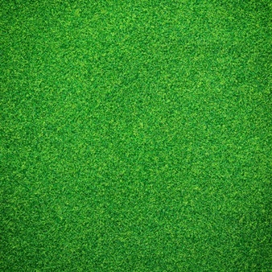
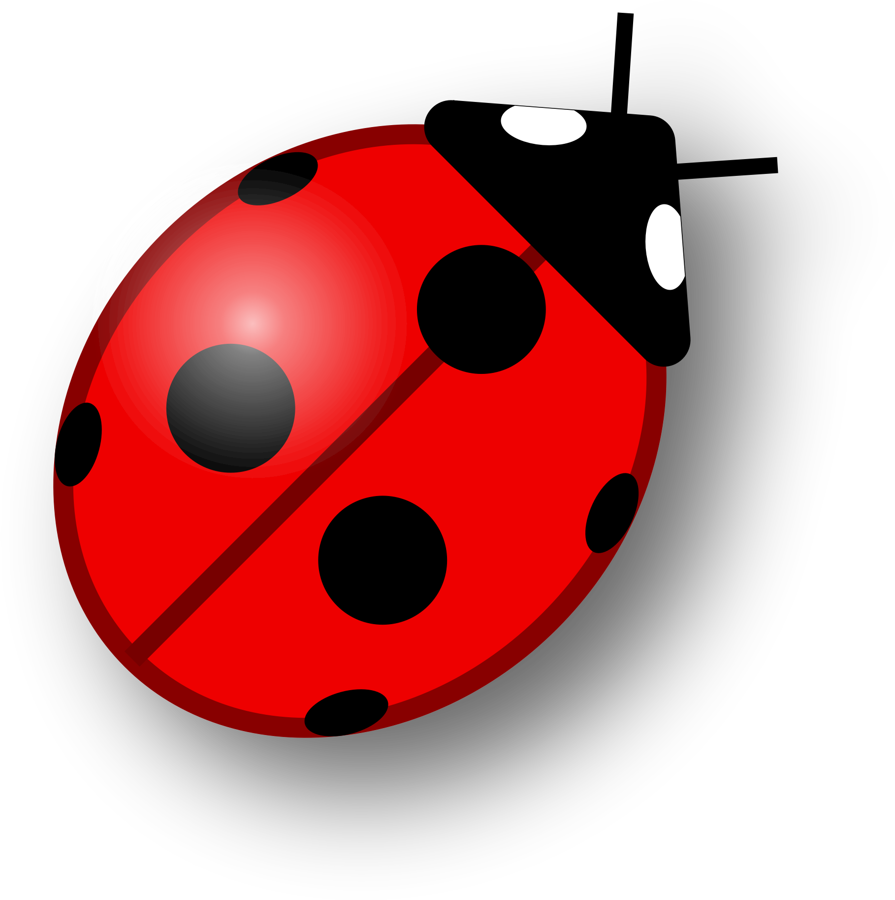
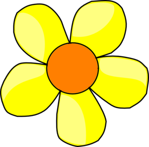

| Գույն | Անվանում | Շարժվում է | Ուտում է | Բազմանում է | Սատկում է | բուժվում է |
| Դատարկ վանդակներ | ||||||
|  | Խոտ | Մոտակա 8 վանդակներում, 4 տակտը մեկ | ||||
|  | Խոտակեր | Մոտակա 8 վանդակներում, էներգիան քչանում է 1֊ով | Խոտերին, մոտակա 8 վանդակներում, շարժվելիս էներգիան ավելանում է 2֊ով | Բազմանում է մոտակա տարածքներում, երբ էներգիան 17-ից ավել է | Սատկում է, երբ էներգիան փոքր է 0֊ից | |
|  | Գիշատիչ | Մոտակա 8 վանդակներում, էներգիան քչանում է 1֊ով | Խոտակերներին, մոտակա 8 վանդակներում, շարժվելիս էներգիան ավելանում է 2֊ով | Բազմանում է մոտակա տարածքներում, երբ էներգիան 11֊ից ավել է | Սատկում է, երբ էներգիան փոքր է 0֊ից | |
| Զինվոր | Մոտակա 19 վանդակներում, էներգիան քչանում է ֊ով | Խոտակերներին, մոտակա 8 վանդակներում, շարժվելիս էներգիան ավելանում է 2֊ով | Բազմանում է մոտակա տարածքներում, երբ էներգիան 17-ից ավել է | Սատկում է, երբ էներգիան փոքր է 0֊ից | Բուժվում է, երբ կանգնում է բժշկի վրա, էներգիան ավելանում է 2-ով, բժիշկից պակասում 3-ով | |
| Բժիշկ | Մոտակա 4 վանդակներում` խաչաձև, էներգիան քչանում է 2֊ով | գիշատիչին, մոտակա 8 վանդակներում, շարժվելիս էներգիան ավելանում է 1֊ով | Սատկում է, երբ էներգիան փոքր է 0֊ից |